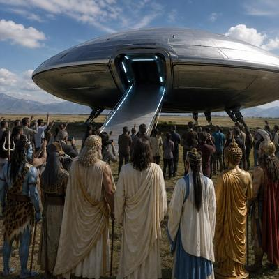

Imaginemos uno de esos acontecimientos que dividen la historia humana en un antes y un después. Descubrimos una civilización extraterrestre inteligente, tecnológicamente miles o millones de años más avanzada que nosotros. Y después de comunicarnos con ella descubrimos algo todavía más desconcertante: conocen aspectos fundamentales del universo que nosotros ni siquiera imaginamos, comprenden fenómenos físicos que todavía ignoramos, y poseen conocimientos cosmológicos extraordinariamente superiores. Pero hay algo aún más perturbador: no reconocen ninguno de nuestros conceptos de «Dios», dioses, diosas, revelaciones, milagros, almas, pecado, cielo, infierno o salvación. Y no porque tengan otro «Dios» y otra teología, sino simplemente porque nunca necesitaron crearlos. Sería, sin duda, uno de los mayores terremotos intelectuales, culturales y psicológicos de nuestra historia.


Hasta ahora, cada religión nuestra ha construido sus propias explicaciones del universo dentro de los límites de la experiencia humana. Y sólo en nuestro pequeño planeta existen unas 4.200 religiones[1], de las cuales sólo la de los hindúes tiene tantos dioses que se ha perdido la cuenta[2]. Pero además hemos concebido muchos matices diferentes del concepto de «Dios»: el creador omnisciente, omnipotente y omnibenevolente, el Supremo Controlador, el motor inmóvil o causa incausada, el ser superior sobre el cual nada puede ser concebido, o el dios sin cualidades, más allá de la comprensión humana; el Principio Universal Supremo, la Realidad Superior del universo, o el universo mismo como dios, hasta los abundantísimos dioses en que creen los hindúes[3].
Son respuestas extraordinariamente diferentes, producidas por seres de una misma especie, de un solo planeta. Y quizá eso debería habernos hecho sospechar que tales conceptos de dios son el resultado de nuestro proceso evolutivo particular, como un artificio mental al que hemos acudido para interpretar nuestra realidad, y que de una manera u otra nos fue provechoso. Es decir, un truco evolutivo muy característico de nuestra especie. Si el paleontólogo de la Universidad Complutense de Madrid, Juan Luis Arsuaga, afirma que otra especie humana, la de los neandertales, no tenía ningún concepto de «Dios», simplemente porque «Carecían del pensamiento mágico»[4]. ¿Por qué no pensar que muchísimas especies extraterrestres inteligentes y autoconscientes, han evolucionado sin necesidad de configurar ese concepto que a nosotros nos ha «resuelto» todo aquello que ignoramos, y que hemos llamado «Dios»?
Imaginemos que los extraterrestres nos preguntan:
—¿Qué es eso de «Dios»?
Y diferentes humanos respondiéramos con diferentes definiciones. ¿Se imaginan su sorpresa y extrañeza?
Pero para el cristianismo el contacto sería particularmente incómodo. Seguramente se preguntaría: «¿Dónde encajan los extraterrestres en el plan de salvación de Dios?» El cura católico Mario Arroyo, doctor en Filosofía por la Pontificia Universidad de la Santa Cruz de Roma, Italia, ya se ha planteado ese tema, y opina que «si los extraterrestres no son humanos, habría que ver en qué momento de la salvación están, es decir, si se encuentran antes del pecado original o después.» Incluso considera que muy probablemente la Iglesia tendría la misión de evangelizarlos[5].
Pero imaginemos algo todavía más perturbador: que esos extraterrestres no tienen rostro, brazos, piernas ni ojos. Quizá sean organismos distribuidos, colonias inteligentes, estructuras biológicas que se comunican mediante campos electromagnéticos, o entidades cuya fisiología ni siquiera podamos representar. La afirmación bíblica de que el ser humano fue creado «a imagen y semejanza de Dios», adquiriría una dimensión problemática, porque durante milenios hemos dibujado dioses con nuestras propias características: dioses que tienen rostro, hablan, escuchan, ven, sienten ira o amor, se complacen, se enfurecen y hasta pueden arrepentirse. Encontrarnos ante una inteligencia superior no antropomórfica, nos produciría un auténtico shock psicológico.
Y probablemente tampoco necesitarían pensar como nosotros. Al preguntarles qué es para ellos lo moralmente correcto, podrían responder con principios totalmente diferentes. Porque su evolución biológica, estructura social, reproducción y percepción del individuo, fueron radicalmente distintos. Quizá ni fueran seres individuales, sino organismos colectivos. Quizás no tuvieran un concepto equivalente a familia. Y eso plantearía una realidad filosóficamente explosiva: nuestra moral no sería una ley universal, sino una construcción surgida de nuestras muy particulares características biológicas, sociales, históricas y cognitivas. Y si una civilización extraterrestre llevara millones de años funcionando con categorías morales muy diferentes a las nuestras, no podríamos seguir afirmando que nuestras normas tienen valores universales.
¿Y qué pasaría con la Biblia? Al principio probablemente nada. Muchos la reinterpretarían para continuar creyendo. Incluso afirmarían que el contacto alienígena estaría confirmando la grandeza de «Dios». Otros dirían que los extraterrestres también fueron creados por él; otros, que Cristo murió también por ellos. Algunos hasta considerarían a los alienígenas como ángeles, demonios, o incluso como una prueba enviada para fortalecer la fe. Acaso hasta identificarían su llegada con la segunda venida de Cristo… Pero también habría quienes se preguntarían: «¿Y si realmente estuvimos equivocados?»
Las religiones abrahámicas enfrentarían un problema especialmente incómodo: ¿qué significa una revelación destinada a la humanidad, pero que no es válida para miles de civilizaciones inteligentes? ¿No es aplicable a ellos nuestra culpabilidad por el pecado? ¿No tienen sus propios profetas, libros sagrados, cielos e infiernos? ¿Tuvo «Dios» otros hijos de otras especies en otros planetas?
Sin embargo, abandonar la religión no sería psicológicamente sencillo. Una de sus funciones más poderosas ha sido ofrecer respuestas a la muerte. Pero imaginemos que esos seres nos aseguran que no hay nada después, que todo termina, así como termina para todas las especies. O que, en su caso en particular han logrado la inmortalidad, pero no en «planos espirituales» (que no entienden qué significan), sino aquí mismo. Pero seguimos preguntando, esperando que tengan todas las respuestas, y de pronto nos dicen «No lo sabemos». Eso nos obligaría a aceptar algo que se nos ha hecho tan difícil: que nosotros tampoco tenemos por qué saberlo todo. Que no tenemos por qué inventar respuestas cuando no sabemos algo. Que cuando lo desconocemos, siempre lo honesto y saludable ha sido decir «No lo sé».
Pero por otra parte la desaparición de «Dios» tampoco eliminaría nuestra necesidad de significado. Seguiremos enamorándonos, creando arte, cuidando nuestros hijos, haciendo ciencia y construyendo sociedades. Pero el sentido de nuestra vida dejaría de ser algo que nos define un ser superior, para convertirse en algo que nosotros mismos definimos y construimos.
Y finalmente, quizás lo mejor del contacto extraterrestre sería que demostraría que todas las religiones son falsas, que no existe nada ni nadie sobrenatural. Que nuestra especie no ocupa ninguna posición privilegiada; que nuestra moral no es universal; que nuestra anatomía no es el modelo óptimo de un ser vivo; que nuestras historias sagradas fueron inventadas por nosotros mismos, y que nuestras preguntas filosóficas son mucho más primitivas de lo que imaginábamos.
El contacto extraterrestre podría ser mucho más que el descubrimiento de otra civilización. Podría ser el descubrimiento de nuestra propia pequeñez, pero paradójicamente, también de nuestro propio valor como especie capaz de inventar dioses, construir mitologías, equivocarse durante milenios, y finalmente, mirar hacia las estrellas para preguntarse si estuvimos equivocados, dando así un paso extraordinario.
[Godless Freeman]
Comentarios
Comments powered by Disqus